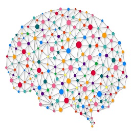

-

HTML5
HTML, que significa Lenguaje de Marcado para Hipertextos (HyperText Markup Language) es el elemento de construcción más básico de una página web y se usa para crear y representar visualmente una página web. Determina el contenido de la página web, pero no su funcionalidad. Otras tecnologías distintas de HTML son usadas generalmente para describir la apariencia/presentación de una página web (CSS) o su funcionalidad (JavaScript). HTML le da "valor añadido" a un texto estándar en español. Hiper Texto se refiere a enlaces que conectan una página Web con otra, ya sea dentro de una página web o entre diferentes sitios web. los vínculos son un aspecto fundamental de la Web. Al subir contenido a Internet y vincularlo a páginas de otras personas, te haces participante activo de esta Red Mundial. HTML usa "markup" o marcado para anotar textos, imágenes, y otros contenidos que se muestran en el Navegador Web. Los artículos de este sitio proveen materiales de referencia para desarrollo web.
El lenguaje HTML basa su filosofía de desarrollo en la referenciación. Para añadir un elemento externo a la página (imagen, vídeo, script, etc.), este no se incrusta directamente en el código de la página, sino que se hace una referencia a la ubicación de dicho elemento mediante texto. De este modo, la página web contiene sólo texto mientras que recae en el navegador web (interpretador del código) la tarea de unir todos los elementos y visualizar la página final. Al ser un estándar, HTML busca ser un lenguaje que permita que cualquier página web escrita en una determinada versión, pueda ser interpretada de la misma forma (estándar) por cualquier navegadores web actualizado.
Sin embargo, a lo largo de sus diferentes versiones, se han incorporado y suprimido características, con el fin de hacerlo más eficiente y facilitar el desarrollo de páginas web compatibles con distintos navegadores y plataformas (PC de escritorio, portátiles, teléfonos inteligentes, tablets, etc.). Sin embargo, para interpretar correctamente una nueva versión de HTML, los desarrolladores de navegadores web deben incorporar estos cambios y el usuario debe ser capaz de usar la nueva versión del navegador con los cambios incorporados.
Así mismo, las páginas escritas en una versión anterior de HTML deberían ser actualizadas o reescritas, lo que no siempre se cumple. Es por ello que ciertos navegadores aún mantienen la capacidad de interpretar páginas web de versiones HTML anteriores. Por estas razones, aún existen diferencias entre distintos navegadores y versiones al interpretar una misma página web.
Aprende más sobre HTML 5:
HTML Tutorial | HTML eBook | HTML5 basics | HTML5 ReferencesAqui mas contenido (videos): HTML 5 Tutorial | Diseña tu sitio web | Tutoriales HTML 5: estructura | Buil a website with HTML 5
-

CSS3
CSS3 es la última evolución del lenguaje de las Hojas de Estilo en Cascada (Cascading Style Sheets), y pretende ampliar la versión CSS2.1. Trae consigo muchas novedades altamente esperadas , como las esquinas redondeadas, sombras, gradientes , transiciones o animaciones, y nuevos layouts como multi-columnas, cajas flexibles o maquetas de diseño en cuadrícula (grid layouts). Las partes experimentales son particulares para cada navegador y deberían ser evitadas en entornos de producción, o usadas con extrema precaución, ya que tanto la sintaxis como la semántica pueden cambiar en el futuro.
Las CSS son un conjunto de instrucciones que permiten definir la apariencia de un sitio web, compuesto por diferentes elementos HTML. CSS posee una forma de representación de los estilos que permite un control total sobre la apariencia y posición de todos los elementos en una página web.
En diferencia a CSS2, que fue una gran especificación que definía varias funcionalidades, CSS3 está dividida en varios documentos separados, llamados "módulos". Cada módulo añade nuevas funcionalidades a las definidas en CSS2, de manera que se preservan las anteriores para mantener la compatibilidad. Los trabajos en el CSS3, comenzaron a la vez que se publicó la recomendación oficial de CSS2, y los primeros borradores de CSS3 fueron liberados en junio de 1999.
CSS ha sido creado en varios niveles y perfiles. Cada nivel de CSS se construye sobre el anterior, generalmente incorporando funciones al nivel previo. Los perfiles son, generalmente, parte de uno o varios niveles de CSS definidos para un una determinada interfaz.
Aprende más sobre CSS3:
CSS3 Tutorial | CSS3 eBook | CSS3 basics | What's is new in CSS3?Aquí más contenido (videos): CSS3 Playlist | CSS3 Crash Tutorial for absolute beginner | Efectos CSS3 | CSS3 Tutorial
-

JAVASCRIPT
JavaScript (JS) es un lenguaje ligero e interpretado, orientado a objetos con funciones de primera clase, más conocido como el lenguaje de script para páginas web, pero también usado en muchos entornos sin navegador, tales como node.js, Apache CouchDB y Adobe Acrobat. Es un lenguaje script multi-paradigma, basado en prototipos, dinámico, soporta estilos de programación funcional, orientada a objetos e imperativa. Leer más sobre JavaScript.
El estándar de JavaScript es ECMAScript. Desde el 2012, todos los navegadores modernos soportan completamente ECMAScript 5.1. Los navegadores más antiguos soportan por lo menos ECMAScript 3. El 17 de Julio de 2015, ECMA International publicó la sexta versión de ECMAScript, la cual es oficialmente llamada ECMAScript 2015, y fue inicialmente nombrada como ECMAScript 6 o ES6. Desde entonces, los estándares ECMAScript están en ciclos de lanzamiento anuales. Esta documentación se refiere a la última versión del borrador, que actualmente es ECMAScript 2019.
JavaScript no debe ser confundido con el lenguaje de programación Java. Ambos "Java" y "Javascript" son marcas registradas de Oracle en Estados Unidos y otros países. Sin embargo, los dos lenguajes de programación tienen muchas diferencias en las sintaxis, semantica y usos.
CSS ha sido creado en varios niveles y perfiles. Cada nivel de CSS se construye sobre el anterior, generalmente incorporando funciones al nivel previo. Los perfiles son, generalmente, parte de uno o varios niveles de CSS definidos para un una determinada interfaz.
Aprende más sobre JavaScript:
Fundamentos de JavaScript | JavaScript eBook | JavaScript: The Language | Guía de JavaScriptAquí más contenido (videos): Curso de JavaScript | Construye una Aplicación con JavaScript | JavaScript for Beginners | JavaScript Complete Course
-
INTELIGENCIA ARTIFICIAL
Desde tiempos inmemoriales, el hombre ha buscado la materialización del deseo de crear seres semejantes a él; pasando por la creación de artefactos con aspecto, movimientos y hasta comportamiento similar al que presentamos los seres humanos. El ruso Isaac Asimov (1920-1992), escritor e historiador, narraba sobre objetos y situaciones que en su tiempo eran ciencia-ficción; sin embargo, con el paso del tiempo, muchas de ellas se han ido volviendo realidad. Asimov, en su libro Runaround describió lo que el día de hoy son las tres leyes de la robótica
Su obra literaria serviria como motivación para que los científicos e ingenieros trataran de hacerla realidad. En los años 50 cuando se logra realizar un sistema que tuvo cierto éxito, se llamó el Perceptrón de Rossenblatt. Este era un sistema visual de reconocimiento de patrones en el cual se aunaron esfuerzos para que se pudieran resolver una gama amplia de problemas, pero estas energías se diluyeron enseguida.
Aproximadamente en ese tiempo, el matematico inglés Alan Turing (1912-1954) propuso una prueba con la finalidad de demostrar la existencia de “inteligencia” en un dispositivo no biológico. Esta prueba conocida como “test de Turing” se fundamenta en la hipótesis de que si una máquina se comporta en todos aspectos como inteligente, entonces debe ser inteligente (Alan Turing, 1950). Como consecuencia de esta prueba, muchos de los esfuerzos de los investigadores en ese tiempo, se enfocaron en la redacción de sistemas de inteligencia artificial lingüísticos, lo que marcó el nacimiento de los conocidos como “chatbots” (robots de plática).
Como consecuencia de esta prueba, muchos de los esfuerzos de los investigadores en ese tiempo, se enfocaron en la redacción de sistemas de inteligencia artificial lingüísticos, lo que marcó el nacimiento de los conocidos como “chatbots” (robots de plática). A pesar de que ya se habían realizado investigación sobre el diseño y las capacidades de las entidades no biológicas, el trabajo de Alan Turing de 1950, concentró el interés de la comunidad científica en el desarrollo de las “máquinas inteligentes”. Dos de las contribuciones más importantes de Alan Turing son el diseño de la primera computadoracapaz de jugar al ajedrez y el establecimiento de la naturaleza simbólica de la computación (ITAM, 1987).
Aprende más sobre Inteligencia Artificial:
IA: Introducción | IA: Algoritmos Genéticos | IA en Investigación Operativa | Busqueda en Inteligencia ArtificialAprende más contenido (videos): Inteligencia artificial a tu alcance | AI Sofia | Google I/O AI Conference | ¿Puede la AI sustituirnos?
-
Machine Learning
El aprendizaje automático o aprendizaje de máquinas (del inglés, "Machine Learning") es el subcampo de las ciencias de la computación y una rama de la inteligencia artificial cuyo objetivo es desarrollar técnicas que permitan a las computadoras aprender. De forma más concreta, se trata de crear programas capaces de generalizar comportamientos a partir de una información
Suministrada en forma de ejempl os. Es, por lo tanto, un proceso de inducción del conocimiento. En muchas ocasiones el campo de actuación del aprendizaje automático se solapa con el de la estadística computacional, ya que las dos disciplinas se basan en el análisis de datos.
Sin embargo, el aprendizaje automático también se centra en el estudio de la complejidad computacional de los problemas. Muchos problemas son de clase NP - hard, por lo que gran parte de la investigación realizada en aprendizaje automático está enfocada al diseño de sol uciones factibles a esos problemas
El aprendizaje automático puede ser visto como un intento de automatizar algunas partes del método científico mediante métodos matemáticos. El aprendizaje automático tiene una amplia gama de aplicaciones, incluyendo mot ores de búsqueda, diagnósticos médicos, detección de fraude en el uso de tarjetas de crédito, análisis del mercado de valores, clasificación de secuencias de ADN, reconocimiento del habla y del lenguaje escrito, juegos y robótica.
Aprende más sobre Machine Learning:
Aprendizaje Automatico | ¿Qué es Machine Learning? |Aprende más aquí(videos) Todos pueden aprender Machine Learning | Machine Learning: ¿Qué es exactamente? |
-
Deep Learning
Aprendizaje profundo (en inglés, deep learning) es un conjunto de algoritmos de clase aprendizaje automático (en inglés, machine learning) que intenta modelar abstracciones de alto nivel en datos usando arquitecturas compuestas de transformaciones no lineales múltiples.
El aprendizaje profundo es parte de un conjunto más amplio de métodos de aprendizaje automático basados en asimilar representaciones de datos. Una observación (por ejemplo, una imagen) puede ser representada en muchas formas (por ejemplo, u n vector de píxeles), pero algunas representaciones hacen más fácil aprender tareas de interés (por ejemplo, "¿es esta imagen una cara humana?") sobre la base de ejemplos, y la investigación en este área intenta definir qué representaciones son mejores y c ómo crear modelos para reconocer estas representaciones.
Varias arquitecturas de aprendizaje profundo, como redes neuronales profundas, redes neuronales profundas convolucionales, y redes de creencia profundas, han sido aplicadas a campos como visión por computador, reconocimiento automático del habla, y reconocimiento de señales de audio y música, y han mostrado producir resultados de vanguardia en varias tareas.
Los algoritmos de aprendizaje profundo contrastan con los algoritmos de aprendizaje poco profundo por el número de transformaciones aplicadas a la señal mientras se propaga desde la capa de entrada a la capa de salida. Cada una de estas transformaciones incluye parámetros que se pueden entrenar como pesos y umbrales. No existe un estándar de facto para el número de transformaciones (o capas) que convierte a un algoritmo en profundo, pero la mayoría de investigadores en el campo considera que aprendizaje profundo implica más de dos transformaciones intermedias.
Aprende más sobre Deep Learning:
Deep Learning: Review | Deep Learning: Importancia |Aprende más(videos): ¿Qué es Deep Learning? | Deep Learning SIMPLIED |
-

Red Neuronal
Las Redes Neuronales son un campo muy importante dentro de la Inteligencia Artificial. Inspirándose en el comportamiento conocido del cerebro humano (principalmente el referido a las neuronas y sus conexiones), trata de crear modelos artificiales que solucionen problemas difíciles de resolver mediante técnicas algorítmicas convencionales.
Las redes neuronales (también conocidas como sistemas conexionistas) son un modelo computacional basado en un gran conjunto de unidades neuronales simples (neuronas artificiales), de forma aproximadamen te análoga al comportamiento observado en los axones de las neur onas en los cerebros biológicos . Cada unidad neuronal est á conectada con muchas otras y los enlaces entre ellas pueden incrementar o inhibir el estado de activaci ó n de las neuronas adyacente s
Cada unidad neuronal, de forma individual, opera empleando funciones de suma. Puede existir una función limitadora o umbral en cada conexión y en la propia unidad, de tal modo que la señal debe sobrepasar un límite antes de propagarse a otra neurona. Es tos sistemas aprenden y se forman a sí mismos, en lugar de ser programados de forma explícita, y sobresalen en áreas donde la detección de soluciones o características es difícil de expresar con la programación convencional.
A principios de los 80, por un lado Hopfield y sus conferencias acerca de la memoria autoasociativa y por otro lado la aparición del libro Parallel Distributed Processing (PDP), escrito por Rumelhart y McClelland reactivaron la investigación en el campo de las redes neuronales. Hubo grandes avances que propiciaron el uso comercial en campos tan variados como el diagnóstico de enfermedades, la aproximación de funciones o el reconocimiento de imágenes.
Aprende más sobre Red Neuronal:
Red Neuronal Artificial | Las Redes Neuronales |Aprende más (videos): Qué es una red neuronal | Como crear nuesra red neuronal |
PROGRESSIVE WEB APP
Progressive web apps (o aplicaciones web progresivas), es un término que se da a una nueva generación de aplicaciones que incrementan su funcionalidad, conforme las capacidades del dispositivo en el que se ejecutan, incrementan, de ahí la palabra progresiva. La siguiente parte del nombre web, hace referencia a que se construyen utilizando estándares de desarrollo web, algunos ya conocidos como HTML, CSS y javaScript; y una nueva generación de APIs de javaScript. La parte final app es porque las Progressive Web Apps se comportan como aplicaciones web nativas, pero usan tecnologías web.
En términos muy simplistas, son páginas web que se comportan como aplicaciones nativas. Es un oración muy simple, pero t ambién muy profunda. Las apps nativas (iOs, Android por ejemplo), históricamente han tenido una serie de ventajas sobre las páginas web, ¿como cuáles? Almacenamiento local, ejecutarse offline, notificaciones push, performance, acceso a hardware, acceso al homescreen del dispositivo, entre otros.
Con el paso del tiempo, la brecha entre las web apps y las apps nativas, se ha ido reduciendo. Hace aproximadamente 6 años, HTML5 comenzó a tomar forma, como el concepto que constituía nuevas etiquetas, CSS3 y nuevas APIs de javaScript, cuyo objetivo era hacer las páginas web, más parecidas a las aplicaciones nativas. Ahí, conocimos a localStorage y webRTC, tuvimos acceso al hardware, desde el GPS, hasta la cámara, pasando claro por el micrófono y los altavoces; también nos presentaron nuevos eventos touch, drag&drop, web workers, web sockets que no eran hardware precisamente, pero que buscaban acercar la experiencia de las interfaces web, a la de las apps nativas.
Casi inmediatamente después, el proyecto Cordova trajo más vida al desarrollo web, a partir de Cordova nacieron Phonegap y Ionic, dos frameworks para desarrollo de "apps nativas", utilizando estándares web, ¿el problema? El problema es que las, nuevas, aplicaciones híbridas, no terminaban de cerrar la brecha. Las aplicaciones híbridas ganaron en el terreno de la instalación, push notifications y acceso al hardware, pero, para muchos, perdieron en performance, UX y acceso offline. Esta generación de aplicaciones se sentía más como un parche, que como una solución. Hubieron proyectos que nacieron como apps híbridas, que eventualmente tuvieron que migrarse a apps nativas escritas en JAVA o en Swift.
Aprende más sobre PWA:
PWA: Google Developers | Tu primera PWA | PWA | Uso de las PWAAqui mas contenido (videos): All you have to know about PWA | What's a PWA? | Progressive Web App Tutorial | Introduction to PWA
CRIPTOMONEDAS
Una criptomoneda, criptodivisa (del inglés cryptocurrency) o criptoactivo es un medio digital de intercambio. La primera criptomoneda que empezó a operar fue el bitcoin en 2009 y, desde entonces, han aparecido muchas otras con diferentes características y protocolos como Litecoin, Ethereum, Ripple, Dogecoin.
Las criptomonedas son monedas virtuales. Pueden ser intercambiadas y operadas como cualquier otra divisa tradicional, pero están fuera del control de los gobiernos e instituciones financieras. Existe un gran número de criptodivisas disponibles, todas con sus propias características y aplicaciones. Las que tienen mayor capitalización de mercado son -al menos por ahora- una minoría, que incluye bitcoin, bitcoin cash, ether, litecoin, ripple y dash.
Las criptomonedas pueden ser consideradas como una alternativa a las divisas tradicionales, pero en realidad fueron concebidas como una solución de pago completamente convencional. En estos momentos, bastantes tiendas aceptan criptomoneda como forma de pago. Aunque es cierto que su validez como método de pago es fundamental para su valor, las criptomonedas habitualmente se parecen más a materias primas como el oro que al mercado de forex
El objetivo de los mineros es recopilar las últimas transacciones en bloques (es decir, conjuntos de transacciones verificadas) y encontrar una solución a un complejo algoritmo. Haciendo esto se obtiene una recompensa: una cantidad fija de criptomoneda. Esta cantidad varía según la criptomoneda en la que se trabaje; la recompensa de bitcoin, por ejemplo, es actualmente de 12,5 bitcoins.
Aprende más sobre Criptomonedas:
Criptomonedas | ¿Qué son las criptomonedas? | FOREX: Criptomoneda | Mercado CriptomonedaAqui mas contenido (videos): ¿Cómo funcionan las criptomoneda? | Ethereum | 3 Cosas que no te dicen sobre las Criptomonedas | Como invertir en criptomonedas
BLOCKCHAIN
Es una estructura de datos en la que la información contenida se agrupa en conjuntos (bloques) a los que se les añade metainformaciones relativas a otro bloque de la cadena anterior en una línea temporal, de manera que gracias a técnicas criptográficas, la información contenida en un bloque sólo puede ser repudiada o editada modificando todos los bloques posteriores. Esta propiedad permite su aplicación en entorno distribuido de manera que la estructura de datos blockchain puede ejercer de base de datos pública no relacional que contenga un histórico irrefutable de información.
En la práctica ha permitido, gracias a la criptografía asimétrica y las funciones de resumen o hash, la implementación de un registro contable (ledger) distribuido que permite soportar y garantizar la seguridad de dinero digital. Siguiendo un protocolo apropiado para todas las operaciones efectuadas sobre la blockchain, es posible alcanzar un consenso sobre la integridad de sus datos por parte de todos los participantes de la red sin necesidad de recurrir a una entidad de confianza que centralice la información.
Por ello se considera una tecnología en la que la "verdad" (estado confiable del sistema) es construída, alcanzada y fortalecida por los propios miembros; incluso en un entorno en el que exista una minoría de nodos en la red con comportamiento malicioso (nodos sybil) dado que, en teoría, para comprometer los datos, un atacante requeriría de una mayor potencia de cómputo y presencia en la red que el resultante de la suma de todos los restantes nodos combinados.
Por las razones anteriores, la tecnología blockchain es especialmente adecuada para escenarios en los que se requiera almacenar de forma creciente datos ordenados en el tiempo, sin posibilidad de modificación ni revisión y cuya confianza pretenda ser distribuída en lugar de residir en una entidad certificadora
Aprende más sobre Blockchain:
Blockchain Official Site | Cadena de bloques | Más sobre Blockchain | ¿Qué es realmente?Aqui mas contenido (videos): Cómo funciona Blockchain | Los bancos y Blockchain | Cómo usar Blockchain | Blockchain: Más allá del bitcoin
CYBERSEGURIDAD
También conocida como ciberseguridad o seguridad de tecnologías de la información, es el área relacionada con la informática y la telemática que se enfoca en la protección de la infraestructura computacional y todo lo relacionado con esta y, especialmente, la información contenida en una computadora o circulante a través de las redes de computadoras.
Para ello existen una serie de estándares, protocolos, métodos, reglas, herramientas y leyes concebidas para minimizar los posibles riesgos a la infraestructura o a la información. La ciberseguridad comprende software (bases de datos, metadatos, archivos), hardware, redes de computadoras y todo lo que la organización valore y signifique un riesgo si esta información confidencial llega a manos de otras personas, convirtiéndose, por ejemplo, en información privilegiada.
La definición de seguridad de la información no debe ser confundida con la de «seguridad informática», ya que esta última solo se encarga de la seguridad en el medio informático, pero la información puede encontrarse en diferentes medios o formas, y no solo en medios informáticos. La seguridad informática es la disciplina que se encarga de diseñar las normas, procedimientos, métodos y técnicas destinados a conseguir un sistema de información seguro y confiable.
Puesto simple, la seguridad en un ambiente de red es la habilidad de identificar y eliminar vulnerabilidades. Una definición general de seguridad debe también poner atención a la necesidad de salvaguardar la ventaja organizacional, incluyendo información y equipos físicos, tales como los mismos computadores. Nadie a cargo de seguridad debe determinar quién y cuándo puede tomar acciones apropiadas sobre un ítem en específico. Cuando se trata de la seguridad de una compañía, lo que es apropiado varía de organización en organización. Independientemente, cualquier compañía con una red debe tener una política de seguridad que se dirija a la conveniencia y la coordinación.
Aprende más sobre Cyberseguridad:
HTML Tutorial | HTML eBook | HTML5 basics | HTML5 ReferencesAqui mas contenido (videos): Some links here | Some links here | Some links here | Some links here
REALIDAD VIRTUAL
Es un entorno de escenas u objetos de apariencia real. La acepción más común refiere a un entorno generado mediante tecnología informática, que crea en el usuario la sensación de estar inmerso en él. Dicho entorno es contemplado por el usuario a través de un dispositivo conocido como gafas o casco de realidad virtual. Este puede ir acompañado de otros dispositivos, como guantes o trajes especiales, que permiten una mayor interacción con el entorno así como la percepción de diferentes estímulos que intensifican la sensación de realidad.
El término realidad virtual (RV) se popularizó a finales de la década de 1980 por Jaron Lanier, uno de los pioneros del campo. Al mismo tiempo, también apareció el término Realidad Artificial (RA). 1 En 1982 el término ciberespacio fue acuñado en una novela por W. Gibson ("Burning Chrome").
La Enciclopedia Británica describe la realidad virtual como "el uso del modelado y la simulación por computadora que permite a una persona interactuar con un entorno sensorial tridimensional (3D) artificial u otro entorno sensorial". Además, establece que "las aplicaciones de realidad virtual sumergen al usuario en un entorno generado por computadora que simula la realidad mediante el uso de dispositivos interactivos, que envían y reciben información y se usan como gafas, auriculares, guantes o trajes para el cuerpo". 3 Por ejemplo, un usuario que usa una pantalla montada en la cabeza con un sistema de proyección estereoscópica puede ver imágenes animadas de un entorno virtual. Un término importante es presencia o telepresencia, que se puede describir como una ilusión de "estar allí".
La realidad virtual comprende dos componentes principales: el entorno del usuario y el entorno virtual. Mientras el usuario interactúa con el sistema de realidad virtual, los dos entornos se comunican e intercambian información a través de una barrera llamada interfaz. La interfaz puede considerarse como un traductor entre el usuario y el sistema de realidad virtual. Cuando el usuario aplica acciones de entrada (por ejemplo, movimiento, generación de fuerza, voz, etc.), la interfaz traduce estas acciones en señales digitales, que pueden ser procesadas e interpretadas por el sistema. Por otro lado, las reacciones calculadas del sistema también se traducen por la interfaz en cantidades físicas, que el usuario puede percibir mediante el uso de diferentes tecnologías de pantalla y actuador (por ejemplo, imágenes, sonidos, olores, etc.).
Aprende más sobre Realidad Virtual:
HTML Tutorial | HTML eBook | HTML5 basics | HTML5 ReferencesAqui mas contenido (videos): Some links here | Some links here | Some links here | Some links here
REALIDAD AUMENTADA
Es el término que se usa para definir la visión de un entorno físico del mundo real, a través de un dispositivo tecnológico. Este dispositivo o conjunto de dispositivos, añaden información virtual a la información física ya existente; es decir, una parte sintética virtual a la real. De esta manera; los elementos físicos tangibles se combinan con elementos virtuales, creando así una realidad aumentada en tiempo real.
La realidad aumentada es diferente de la realidad virtual: sobre la realidad material del mundo físico monta una realidad visual generada por la tecnología, en la que el usuario percibe una mezcla de las dos realidades; en cambio, en la realidad virtual el usuario se aísla de la realidad material del mundo físico para sumergirse en un escenario o entorno totalmente virtual.
Con la ayuda de la tecnología; por ejemplo, añadiendo la visión por un computador y reconocimiento de objetos, la información sobre el mundo real alrededor del usuario, se convierte en interactiva y digital. La información artificial sobre el medio ambiente y los objetos puede ser almacenada y recuperada como una capa de información en la parte superior de la visión del mundo real.
La realidad aumentada de investigación explora la aplicación de imágenes generadas por ordenador en tiempo real a secuencias de vídeo como una forma de ampliar el mundo real. La investigación incluye a este respecto el uso de pantallas colocadas en la cabeza, un monitor virtual colocado en la retina para mejorar la visualización y la construcción de ambientes controlados a partir de sensores y actuadores.
Aprende más sobre Realidad Aumentada:
HTML Tutorial | HTML eBook | HTML5 basics | HTML5 ReferencesAqui mas contenido (videos): Some links here | Some links here | Some links here | Some links here
REALIDAD MIXTA
La realidad mixta (RM), también llamada a veces realidad híbrida, es la combinación de realidad virtual y realidad aumentada. Esta combinación permite crear nuevos espacios en los que interactúan tanto objetos y/o personas reales como virtuales. Es decir, se puede considerar como una mezcla entre la realidad, realidad aumentada, virtualidad aumentada y realidad virtual.
El término realidad mixta no debe confundirse con el de realidad aumentada o RA. La realidad aumentada genera los estímulos a tiempo real para la interacción del usuario, los cuales se superponen sobre el entorno físico de este, mientras que la realidad mixta no sólo permite la interacción del usuario con el entorno virtual sino que también permite que objetos físicos del entorno inmediato del usuario sirvan como elementos de interacción con el entorno virtual.
La realidad mixta se está implementando en un gran número de aplicaciones, se está empezando a manifestar en la industria del entretenimiento y el arte, así como también empieza a diversificarse en el mundo de la educación y los negocios.
La realidad mixta permite que una fuerza de trabajo global de equipos remotos trabaje conjuntamente y aborde los retos empresariales de una organización. No importa dónde se encuentre físicamente, un empleado puede ingresar a un entorno virtual colaborativo y dinámico. Las barreras de idioma se volverán irrelevantes ya que las aplicaciones de AR pueden traducir con exactitud en tiempo real. Esto representa una mano de obra más flexible. Si bien, muchos compañías siguen utilizando modelos inflexibles de tiempo de trabajo fijo y ubicación, hay evidencia de que los empleados son más productivos si tienen mayor autonomía sobre dónde, cuándo y cómo trabajan. Los empleados también se benefician de la autonomía en cómo trabajan porque cada uno procesa la información diferentemente. El modelo VAK clásico para los estilos de aprendizaje diferencia a los alumnos visuales, auditivos y cenestésicos.
Aprende más sobre Realidad Mixta:
HTML Tutorial | HTML eBook | HTML5 basics | HTML5 ReferencesAqui mas contenido (videos): Some links here | Some links here | Some links here | Some links here
IoT (Internet of Things)
Es un concepto que se refiere a la interconexión digital de objetos cotidianos con Internet. Alternativamente, Internet de las cosas es la conexión de Internet con más cosas u objetos que con personas. También, se suele conocer como Internet de todas las cosas o Internet en las cosas. Si los objetos de la vida cotidiana tuvieran incorporadas etiquetas de radio, podrían ser identificados y gestionados por otros equipos, de la misma manera que si lo fuesen por seres humanos.
El concepto de Internet de las cosas fue propuesto por Kevin Ashton en el Auto-ID Center del MIT en 1999, donde se realizaban investigaciones en el campo de la identificación por radiofrecuencia en red (RFID) y tecnologías de sensores.
Por ejemplo, si los libros, termostatos, refrigeradores, la paquetería, lámparas, botiquines, partes automotrices, entre otros, estuvieran conectados a Internet y equipados con dispositivos de identificación, no existirían, en teoría, artículos fuera de stock o medicinas caducas; sabríamos exactamente la ubicación, cómo se consumen en el mundo; el extravío sería cosa del pasado, y sabríamos qué está encendido y qué está apagado en todo momento.
El Internet de las cosas debería codificar de 50 a 100 000 millones de objetos y seguir el movimiento de estos. Se calcula que todo ser humano está rodeado, al menos, por un total de aproximadamente 1000 a 5000 objetos. Según la empresa Gartner, en el 202013 habrá en el mundo aproximadamente 26 mil millones de dispositivos con un sistema de conexión al Internet de las cosas. Abi Research, por otro lado, asegura que para el mismo año existirán 30 mil millones de dispositivos inalámbricos conectados a Internet. Con la próxima generación de aplicaciones de Internet (protocolo IPv6) se podrían identificar todos los objetos, algo que no se podía hacer con IPv4. Este sistema sería capaz de identificar instantáneamente por medio de un código a cualquier tipo de objeto.
Aprende más sobre Internet of Things:
HTML Tutorial | HTML eBook | HTML5 basics | HTML5 ReferencesAqui mas contenido (videos): Some links here | Some links here | Some links here | Some links here
MECATRONICA
Es una disciplina que sirve para diseñar y desarrollar productos que involucren sistemas de control para el diseño de productos o procesos inteligentes, lo cual busca crear maquinaria más compleja para facilitar las actividades del ser humano a través de procesos electrónicos en la industria mecánica, principalmente. Esta disciplina une la ingeniería mecánica, ingeniería electrónica, ingeniería de control e ingeniería informática. Debido a que combina varias ingenierías en una sola, su punto fuerte es la versatilidad.
Un consenso común es describir a la mecatrónica como una disciplina integradora de las áreas de mecánica, electrónica e informática cuyo objetivo es proporcionar mejores productos, procesos y sistemas industriales. La mecatrónica no es, por tanto, una nueva rama de la ingeniería, sino un concepto recientemente desarrollado que enfatiza la necesidad de integración y de una interacción intensiva entre diferentes áreas de la ingeniería.
Con base en lo anterior, se puede hacer referencia a la definición propuesta por J. A. Rietdijk: "Mecatrónica es la combinación sinérgica de la ingeniería mecánica de precisión, de la electrónica, del control automático y de los sistemas para el diseño de productos y procesos", la cual busca crear maquinaria más compleja para facilitar las actividades del ser humano a través de procesos electrónicos en la industria mecánica principalmente. Existen, claro está, otras versiones de esta definición, pero ésta claramente enfatiza que la mecatrónica está dirigida a las aplicaciones y al diseño.
La mecatrónica nace para suplir tres urgentes necesidades latentes; la primera, encaminada a automatizar la maquinaría y así lograr procesos productivos ágiles y confiables; la segunda crear productos inteligentes, que respondan a las necesidades del mundo moderno; y la tercera, por cierto muy importante, armonizar entre los componentes mecánicos y electrónicos de las máquinas, ya que en muchas ocasiones, era casi imposible lograr que tanto mecánica como electrónica manejaran los mismos términos y procesos para hacer o reparar equipos. Es una disciplina que sirve para diseñar y desarrollar productos que involucren sistemas de control para el diseño de productos o procesos inteligentes, lo cual busca crear maquinaria más compleja para facilitar las actividades del ser humano a través de procesos electrónicos en la industria mecánica, principalmente. Esta disciplina une la ingeniería mecánica, ingeniería electrónica, ingeniería de control e ingeniería informática. Debido a que combina varias ingenierías en una sola, su punto fuerte es la versatilidad.
Aprende más sobre Internet of Things:
HTML Tutorial | HTML eBook | HTML5 basics | HTML5 ReferencesAqui mas contenido (videos): Some links here | Some links here | Some links here | Some links here
3D PRINTING
Es un grupo de tecnologías de fabricación por adición donde un objeto tridimensional es creado mediante la superposición de capas sucesivas de material. Las impresoras 3D son por lo general más rápidas, más baratas y más fáciles de usar que otras tecnologías de fabricación por adición, aunque como cualquier proceso industrial, estarán sometidas a un compromiso entre su precio de adquisición y la tolerancia en las medidas de los objetos producidos.
Las impresoras 3D ofrecen a los desarrolladores del producto la capacidad para imprimir partes y montajes hechos de diferentes materiales con diferentes propiedades físicas y mecánicas, a menudo con un simple proceso de ensamble. Las tecnologías avanzadas de impresión 3D pueden incluso ofrecer modelos que pueden servir como prototipos de producto.
Desde 2003 ha habido un gran crecimiento en la venta de impresoras 3D. De manera inversa, el coste de las mismas se ha reducido. Esta tecnología también encuentra uso en campos tales como joyería, calzado, diseño industrial, arquitectura, ingeniería y construcción, automoción y sector aeroespacial, industrias médicas, educación, sistemas de información geográfica, ingeniería civil y muchos otros.
Un gran número de tecnologías en competencia están disponibles para la impresión 3D; sus principales diferencias se encuentran en la forma en la que las diferentes capas son usadas para crear piezas. Algunos métodos usan fundido o ablandando el material para producir las capas, por ejemplo sinterizado de láser selectivo (SLS) y modelado por deposición fundida (FDM), mientras que otros depositan materiales líquidos que son solidificados con diferentes tecnologías. En el caso de manufactura de objetos laminados, se cortan capas delgadas para ser moldeadas y unidas juntas.
Aprende más sobre 3D Printing:
HTML Tutorial | HTML eBook | HTML5 basics | HTML5 ReferencesAqui mas contenido (videos): Some links here | Some links here | Some links here | Some links here
TECNOLOGIA 5G
En telecomunicaciones, 5G son las siglas utilizadas para referirse a la quinta generación de tecnologías de telefonía móvil. Es la sucesora de la tecnología 4G. Actualmente se encuentra sin estandarizar y las empresas de telecomunicación están desarrollando sus prototipos. Está previsto que su uso común sea en 2020.
La compañía sueca Ericsson aún no ha conseguido alcanzar velocidades de 5 Gbps reales, con demostraciones en directo del estándar previo a la tecnología de red (preestándar) 5G. En noviembre de 2014, Huawei anuncia la firma de un acuerdo con la operadora móvil rusa Megafon para estandarizar y desarrollar redes 5G de prueba, en vistas a la Copa Mundial de Fútbol de 2018.8 En febrero de 2017, la Unión Internacional de Telecomunicaciones (UIT) dependiente de Naciones Unidas reveló alguna de las especificaciones de la tecnología 5G. Entre ellas se incluyen: velocidades de descarga mínimas de 20 Gbps y 10 Gbps de subida, y una latencia de 4 ms. Se pretende optimizar los dispositivos para hacerlo lo más eficiente posible para el Internet de las cosas (IoT, por sus siglas en inglés). Está previsto que todo el mundo utilice esa conectividad en 2025.
El programa surcoreano “5Gmobile communication systems based on beam-divisionmultiple access and relays with group cooperation” se formó en 2008. En Europa, Neelie Kroes, la Comisaría Europea, recibió en 2013 50 millones de euros para las investigaciones con el objetivo de entregar la tecnología móvil 5G en 2020. En particular, el Proyecto METIS 2020 fue impulsado por un fabricante de automóviles y varias empresas de telecomunicaciones, y prevé llegar a un consenso mundial sobre el futuro sistema de comunicaciones móviles. A raíz de esto, en 2013, otro proyecto se inició, llamado 5Green, ligado al proyecto METIS y con objetivo de desarrollar redes verdes 5G Móviles. Aquí, el objetivo es desarrollar directrices para la definición de la red de nueva generación con atención especial a aspectos de eficiencia energética, sostenibilidad y accesibilidad.
El miércoles 20 de diciembre de 2017, el 3rd Generation Partnership Program (3GPP) aprobó, en Lisboa (Portugal), las especificaciones de Nueva Radio 5G No Autónoma (NSA 5G NR, o Non-Standalone 5G New Radio). Se trata del primer estándar de Quinta Generación (5G) de redes móviles aprobado oficialmente por el 3GPP
Aprende más sobre Tecnología G5:
HTML Tutorial | HTML eBook | HTML5 basics | HTML5 ReferencesAqui mas contenido (videos): Some links here | Some links here | Some links here | Some links here
-